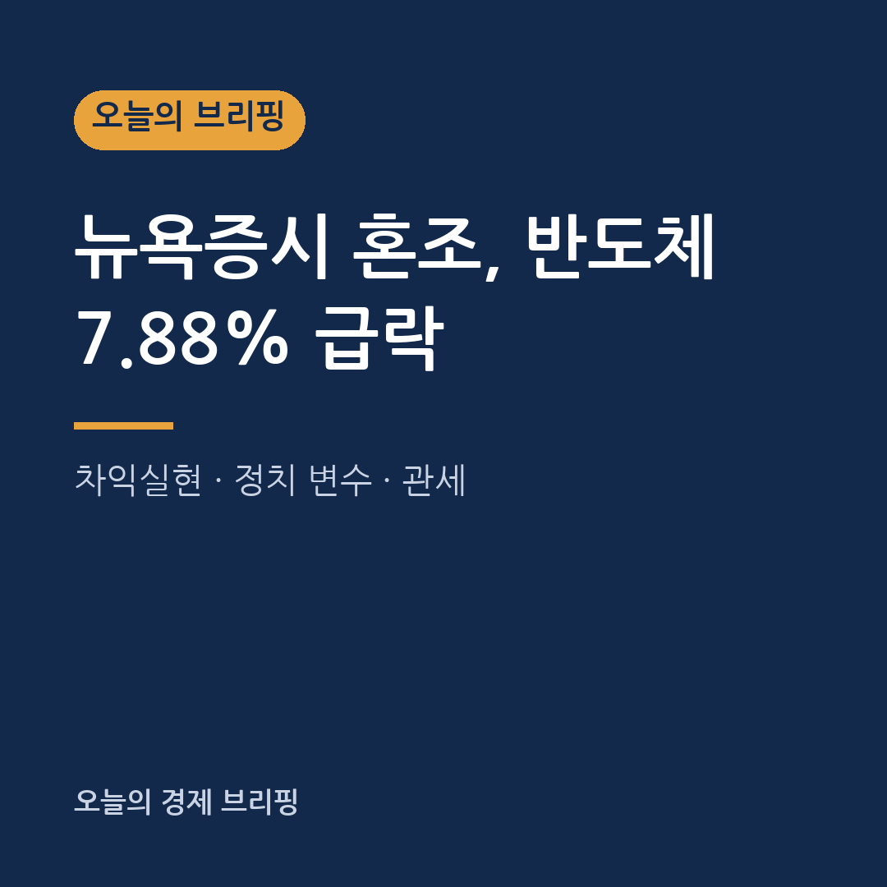
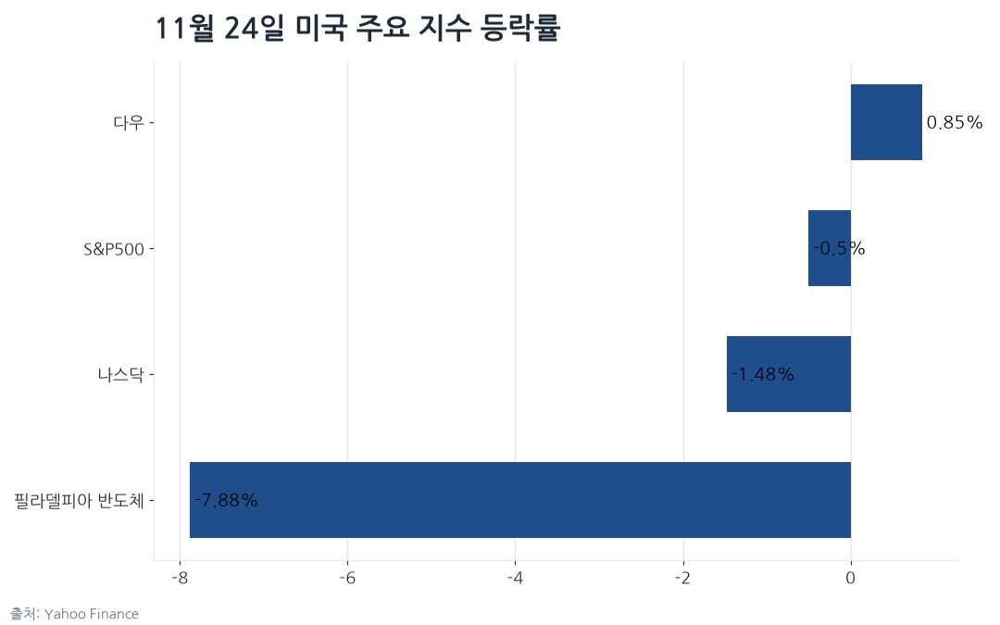

2026-11-25-0731-tistory 발행 키트 · 이 페이지는 검색에 노출되지 않습니다.
제목
카테고리
오늘의 브리핑태그
본문 (그림·표 포함)
휴대폰 블로그 앱에서는 그림이 같이 붙지 않을 수 있어요. 그때는 [글자만 복사] 후 아래 이미지를 저장해 [그래프1]·[표1] 자리에 첨부하세요.

핵심 결론부터 정리합니다. 24일(현지시간) 미국 증시는 다우가 오르고 나스닥·S&P500이 내리는 혼조로 끝났으며, 필라델피아 반도체지수가 7.88% 급락하며 전날의 급등분 상당 부분을 반납했습니다. 하락의 중심에는 차익실현과 정치·관세 변수가 있었습니다.
▶ 배경: 직전 거래일의 급등 23일 나스닥은 6.51% 오르며 크게 반등했고, 엔비디아도 하루 만에 31% 폭등했습니다. 급등 폭이 컸던 만큼 24일에는 이익 실현 매물이 나오기 쉬운 환경이었습니다.
▶ 핵심 내용: 지수별 마감 다우존스지수는 423.39포인트(0.85%) 올라 50,018.70에 마감했습니다. S&P500은 7,201.09로 0.50% 내렸고, 나스닥은 23,733.54로 1.48% 내렸습니다.
11월 24일 미국 증시 마감
| 지수 | 종가 | 전일 대비 |
|---|---|---|
| 다우 | 50,018.70 | +423.39 (+0.85%) |
| S&P500 | 7,201.09 | -36.08 (-0.50%) |
| 나스닥 | 23,733.54 | -356.03 (-1.48%) |
| 필라델피아 반도체 | 8,832.50 | -755.55 (-7.88%) |
출처: Yahoo Finance
반도체는 낙폭이 훨씬 컸습니다. 필라델피아 반도체지수는 8,832.50으로 755.55포인트 떨어졌으며, 한국경제는 전날 상승분의 64%를 하루 만에 되돌렸다고 전했습니다.

개별 종목에서는 엔비디아가 5.86% 하락했고 마이크론은 11%대 내렸습니다. 최근 상장한 앤트로픽은 6.54% 하락해 상장 4거래일 만에 공모가 83달러 아래에서 마감했습니다.
▶ 영향: 하락 요인 세 가지 첫째, 차익실현입니다. 직전 거래일 급등에 따른 매물이 반도체와 AI 관련주에 집중됐습니다.
둘째, 정치적 불확실성입니다. 엔비디아 경영진 복귀를 둘러싸고 수출통제 위반 여부를 따지는 공세가 여야 양쪽에서 나오고 있고, 다음 달 3일 상원 청문회가 거론됩니다. 복귀 효과의 지속성에 의문이 제기된 배경입니다.
셋째, 관세 우려입니다. 미 무역대표부(USTR)가 이르면 이번 주 과잉생산 관련 관세 조사 결과를 발표할 것이라는 보도가 나왔습니다. 다만 일부에서는 이번 낙폭을 펀더멘털(기업의 실적·체력) 훼손보다 과열 되돌림에 가깝다고 평가합니다.
▶ 환율·금리·유가 원·달러 환율은 1,340.79원으로 전일 대비 3.52원 하락했습니다. 미 국채 10년물 금리는 4.90%로 전일(4.92%)보다 소폭 낮아졌고, WTI 유가는 1.90% 상승한 배럴당 81.69달러에 마감했습니다.
▶ 확인할 점: 오늘 국내 증시 체크포인트 국내 반도체 대형주가 전날 반등했던 만큼 미국발 낙폭이 어느 정도 반영되는지가 첫 번째 관전 포인트입니다. 이와 함께 환율이 1,340원 선에서 안정되는지, USTR 발표와 청문회 일정이 나오는지를 확인할 필요가 있습니다.
오늘 확인할 점
| 무엇을 | 왜 | 어디서 확인 |
|---|---|---|
| 국내 반도체 대형주 흐름 | 미국 반도체 급락 반영 정도 | 장 초반 시세 |
| 원·달러 환율 | 1,340원대 안정 여부 | 외환시장 시세 |
| USTR 관세 조사 결과 | 이르면 이번 주 발표 보도 | 한국경제 등 언론 보도 |
| 상원 청문회 일정 | 다음 달 3일 거론 | 한국경제 등 언론 보도 |
출처: 한국경제, Yahoo Finance
▶ 정리 1. 24일 미 증시는 다우 +0.85%, S&P500 -0.50%, 나스닥 -1.48%의 혼조 마감이었습니다. 2. 반도체지수는 7.88% 급락했으며 차익실현·정치 변수·관세 우려가 겹쳤습니다. 3. 국내에서는 반도체주 흐름, 환율, USTR 발표 여부를 우선 확인하면 됩니다.
이미지 (개별 복사·저장)
출처 (본문 맨 아래에 붙여넣기 권장)
- 연합뉴스, 반도체지수 급반락 관련 기사, https://www.yna.co.kr/view/AKR20261125012700009 - 한국경제, 필라델피아 반도체지수 하락 속보, https://www.hankyung.com/article/2026112581457 - 한국경제, 앤트로픽 공모가 하회 속보, https://www.hankyung.com/article/2026112581447 - 한국경제, USTR 과잉생산 관세 조사 속보, https://www.hankyung.com/article/2026112480347 - 연합뉴스, 뉴욕증시 마감 종합, https://www.yna.co.kr/view/AKR20261125011251072 - 시세: Yahoo Finance